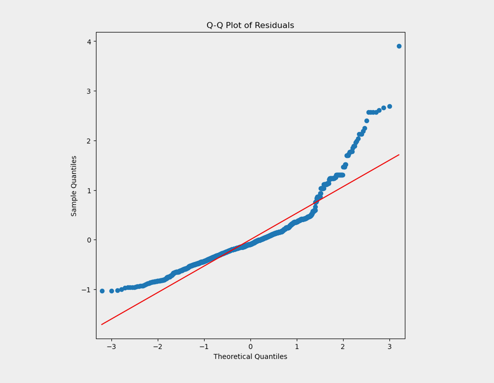

01
01
FINANCIAL MODELLING
Black–Scholes calculator
Explore how price, volatility and time affect the theoretical value of an option.
Delivered: An interactive pricing tool with call and put values, Greeks and sensitivity analysis.
JavaScript · Python
THE PORTFOLIO
Explore the question behind each project and the technical skills used to answer it. Select a skill tag to jump directly to its application.
01
FINANCIAL MODELLING
Explore how price, volatility and time affect the theoretical value of an option.
Delivered: An interactive pricing tool with call and put values, Greeks and sensitivity analysis.
JavaScript · Python
 02
02
EXPLORATORY ANALYSIS
Investigate how weather, seasons and rider types relate to bike usage in Washington, D.C.
Delivered: A documented cleaning workflow and visual analysis of usage patterns.
Python · Pandas · Matplotlib · SciPy

03STATISTICAL ANALYSIS
Examine relationships between training, department and employee performance.
Delivered: Statistical comparisons and regression diagnostics to inform workforce decisions.
Python · Statsmodels · SciPy · Seaborn
 04
04
PUBLIC SAFETY DATA
Explore crash severity across speed, lighting, weather and road conditions from 2016–2020.
Delivered: Comparative tables showing counts and rates of fatal and injury crashes.
Python · Pandas